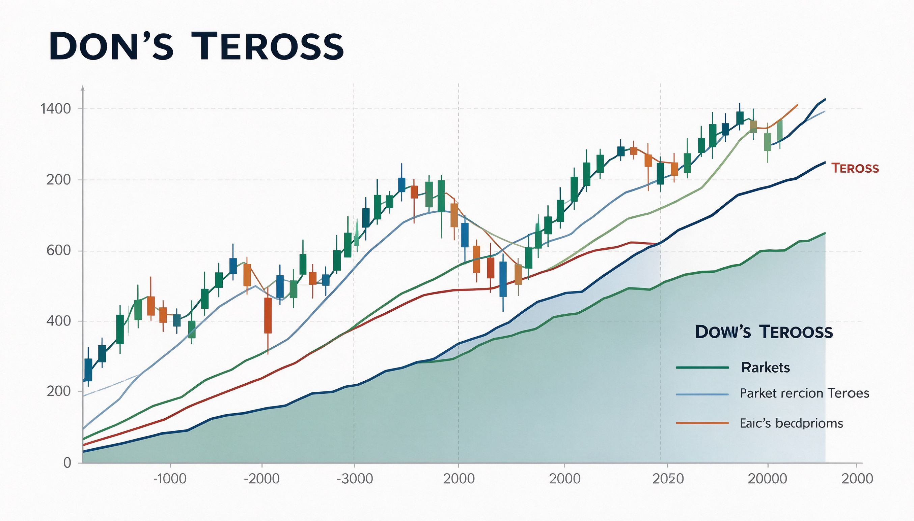
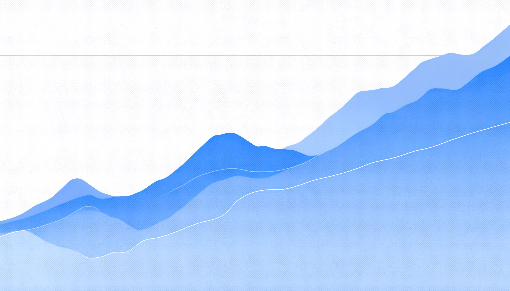
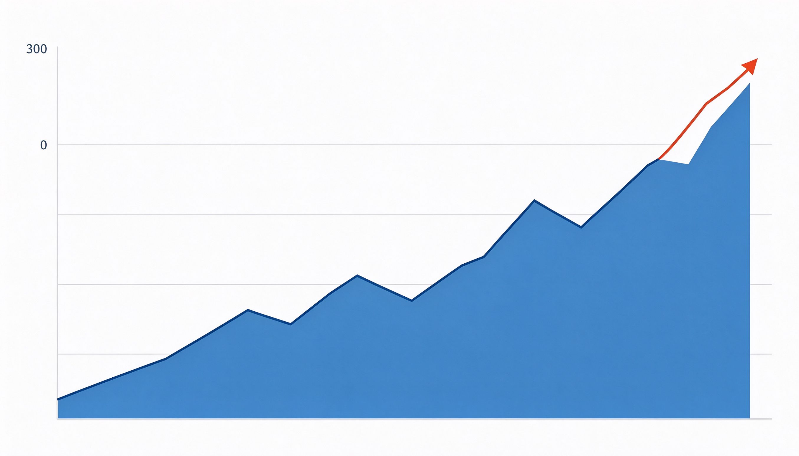
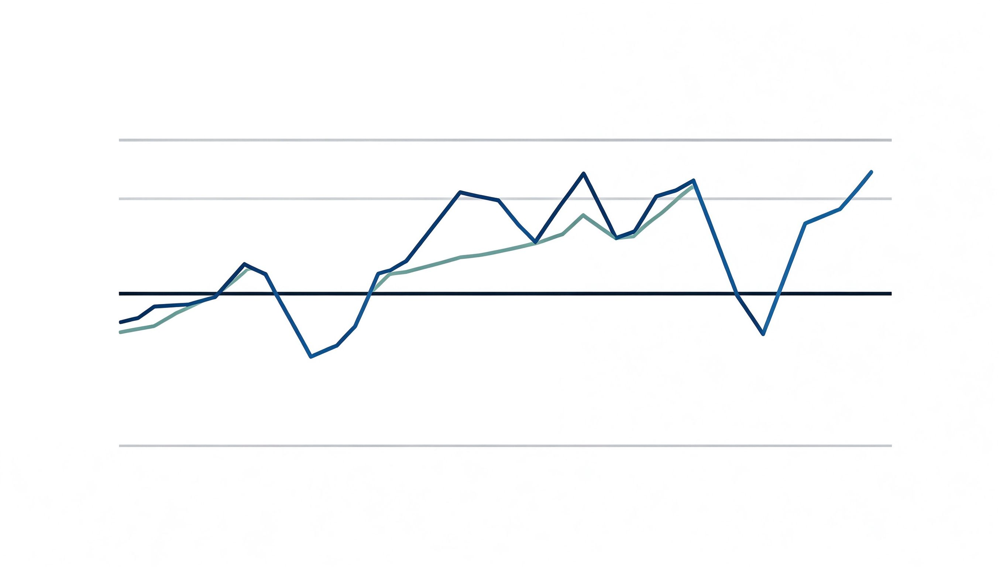
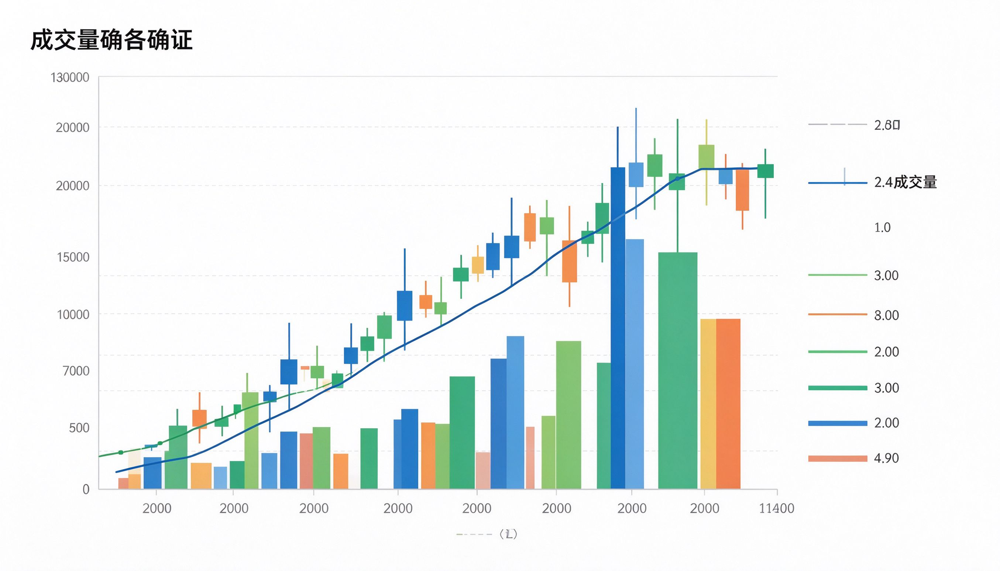
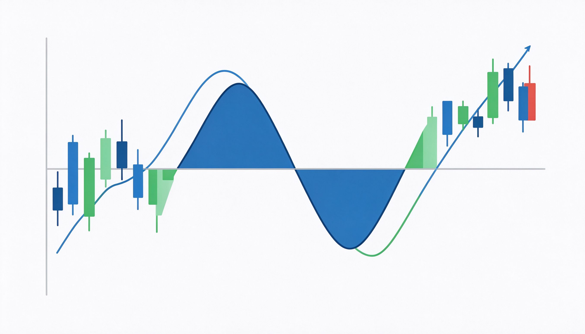

查尔斯·道 · 技术分析基石 · 三大趋势理论
主要趋势次级趋势指数确认成交量反转信号人最幸福的时刻不是躺着刷手机，而是全神贯注做一件有挑战的事。心流，是主动掌控人生的方法。
一百多年前查尔斯·道创立道氏理论，成为现代技术分析的源头。它回答一个根本问题：市场到底在干什么？答案藏在三种趋势里——主要趋势、次级趋势、短期波动。顺势而为、指数确认、成交量验证，这套思维至今仍是全球交易者的底层语言。
主要趋势：持续数月到数年，是市场的大方向；次级趋势：数周到数月，是主要趋势中的回调或反弹；短期波动：数天，是市场噪音。三层各有各的用处：主要趋势定方向，次级趋势找买卖点，短期波动是用来过滤的噪音。

牛市：高点低点不断抬高，行情持续向上；熊市：高点低点不断降低，行情持续向下。道氏理论的核心纪律：顺着主要趋势操作——牛市中持有多头，熊市中离场或做空。逆势交易是大多数亏损的根源，顺势是唯一被验证的答案。

牛市中的下跌叫回调，熊市中的上涨叫反弹。回调给你更好的进场点：趋势未破，逢回调买入；反弹给你离场的机会：趋势已坏，逢反弹卖出。次级趋势往往让人误判方向——把回调当熊市、把反弹当牛市，是散户最常见的错误。

道氏理论要求多个平均指数互相确认：指数间同步创高或同步走弱，信号才有效；一个创新高、另一个不跟（背离），就要警惕。确认的作用是过滤假信号——宁可等确认慢半拍，也不要在单指数信号上重仓赌方向。

道氏理论用成交量验证价格：放量上涨说明趋势健康、资金进场；缩量上涨说明上涨乏力、后继堪忧；下跌放量说明抛压沉重。量价配合是趋势的发动机——价格是方向，成交量是动力，两个信号一起看，假突破就藏不住。

趋势反转的信号：双顶（两次冲高不过前高，涨不动了）、双底（两次探底不破前低，跌不动了）。道氏理论强调确认——形态出现不等于反转，跌破颈线才算。先有形态，再有确认，才能动手。学会识别反转，就学会在顶部保住利润、在底部捡回筹码。
解锁你将获得：第 8-10 课完整内容（心法纪律、道氏实战法、总结复盘）+ 全部 16 个互动游戏 + 全部 12 枚徽章 + 深度精读视频。
本书出自「熙祺智书」投资理财专题 · 技术分析。配套阅读：《股市趋势技术分析》《日本蜡烛图技术》《趋势跟踪》。